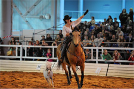
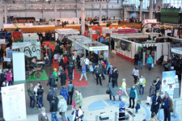
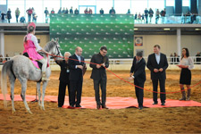

Семинар по продажам выставочного оборудования
Сегодня в Санкт-Петербурге зарегистрировано свыше 1100 лошадей, больше десятка профильных компаний и конноспортивных клубов.

Такими данными поделился начальник Управления ветеринарии Санкт-Петербурга Юрий Андреев на открытии XVI Международной конной выставки «Иппосфера 2014». Он подчеркнул, что лошади внесли неоценимый вклад в развитие жизни человека и продолжают помогать людям в занятиях спортом и лечении заболеваний.
В Ленинградской области так же наметился рост поголовья лошадей, которое насчитывает порядка 5000 голов, – сказал заместитель председателя Комитета по агропромышленному и рыбохозяйственному комплексу Ленобласти Дмитрий Бутусов. — Это, прежде всего, связано с отнесением их к сельскохозяйственным животным и поддержкой коневодов госорганами.
Участники церемонии открытия отметили важное значение конных выставок в развитии коневодства в России, привлечения внимания к этой отрасли как профессионалов, так и любителей. Сегодня на выставке «Иппосфера» представлены 60 компаний из России, СНГ, стран Балтии, Франции, Германии и Испании. Все желающие смогут оценить достоинства 150 лошадей 20 пород в ежедневных шоу-программах.
«В следующем году выставка будет проходить в новом конгрессно-выставочном комплексе «Экспофорум» в Пулково, который сможет принять не только большее количество участников, но и позволит вместить более 3000 гостей», – сказал в заключение генеральный директор компании «ЭкспоФорум-Интернэшнл» Сергей Воронков.